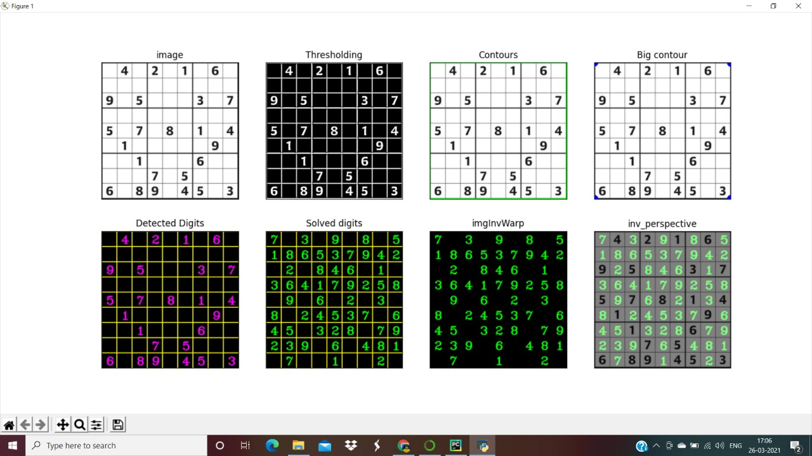

OpenCV Sudoku solver
This project helps to solve sudoku board. User has to capture image of the sudoku board and input it in this project.
It is also useful in terms of revising basic image processing, building neural network and applying backtracking algorithm.
The main task of this project is to extract sudoku board from image and returns a solved sudoku image.
I have used basic image processing and build a Lenet model.After that applied backtacking algorithm.
I worked on this project for 3 days after learning CNN basics.
Technologies:
- - Python
- - OpenCV
- - image processing
- - CNN
- - Algorithms